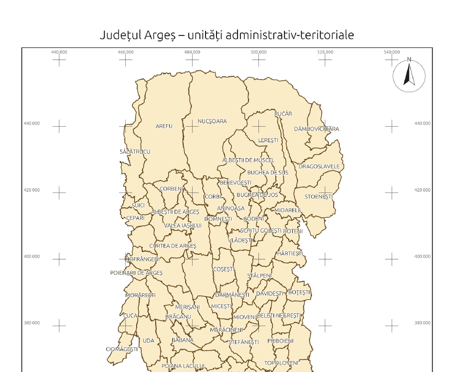

Documentul descrie construcția aplicației Cadastru: arhitectura, modelul de date, algoritmii (transformări de coordonate, TransDatRO, citirea formatelor, randare, hărți de fundal, tipărire), formatele de fișiere proprii, linia de comandă, construirea din sursă și validarea. Se adresează celor care întrețin sau extind aplicația. Utilizarea este descrisă în Manualul de utilizare.
rusqlite (pentru GeoPackage).cadastru, folosită identic de interfața grafică și de linia de comandă.| Element | Valoare |
|---|---|
| Nume, versiune | Cadastru 1.9.0 |
| Autor | Ginu Popescu, scriemiaici@proton.me |
| Licență | MIT |
| Limbaj | Rust, ediția 2024 (compilator 1.97) |
| Platformă țintă | Windows 10/11 x64 (x86_64-pc-windows-msvc sau x86_64-pc-windows-gnu) |
| Interfață grafică | egui / eframe 0.37, randare OpenGL (glow) |
| Dimensiune cod | circa 21 400 de linii Rust, în 30 de module |
| Executabile | cadastru.exe (≈ 22 MB), cadastru-cli.exe (≈ 12 MB) |
Figura 2.1. Componentele aplicației. Săgețile arată dependențele.
| Fișier | Linii | Responsabilitate |
|---|---|---|
src/lib.rs | 18 | Rădăcina bibliotecii; reexportă Crs, Transformer și modelul. |
src/expr.rs | 939 | Expresii pe atribute în stilul SQL WHERE: analiză lexicală și sintactică, evaluare cu logica în trei valori (secțiunea 8.10). |
src/area.rs | 229 | Filtrul pe zonă la încărcare: entitățile din încadrarea României în EPSG:3844 sau din alt dreptunghi (secțiunea 6.6). |
src/query.rs | 374 | Interogări pe atribute: condiții cu operatori, legate prin ȘI / SAU, comparații fără majuscule și diacritice (secțiunea 8.8). |
src/i18n.rs | 113 | Limba curentă (Lang), comutarea, traducerea la rulare (trs) a textelor din constante (secțiunea 8.6). |
i18n-macros/src/lib.rs | 121 | Crate proc-macro cadastru-i18n-macros: macrourile tr! și tr_table!. |
lang/en.tsv | 807 | Pachetul pentru limba engleză: text românesc ↦ text englez. |
src/model.rs | 1 028 | Coordonate, dreptunghiuri, geometrii, câmpuri și valori, straturi vectoriale, rastere, statistici. |
src/crs.rs | 1 027 | Sisteme de coordonate (EPSG, PROJ, WKT, .prj ESRI), căutare, sisteme presupuse, Transformer. |
src/transdatro.rs | 998 | Portul algoritmului TransDatRO, gridurile, formatul de fișiere TransDatRO. |
src/geomio.rs | 497 | Codificare și decodificare WKB (inclusiv GeoPackage) și WKT. |
src/convert.rs | 541 | Conversia unui fișier, conversia în lot, exportul pe tipuri de geometrie (secțiunea 6.5). |
src/rasterops.rs | 534 | Reproiecție raster, reeșantionare, randare RGBA, rampe de culori, hillshade. |
src/formats/mod.rs | 524 | Registrul formatelor, deschiderea după extensie, scriere, codificări, fișiere .prj. |
src/formats/*.rs | 6 657 | Câte un modul pe format (capitolul 6). |
src/main.rs | 69 | Punctul de intrare al interfeței: fereastra, pictograma, argumentele. |
src/gui/mod.rs | 2 161 | Starea aplicației (App), meniuri, bara de instrumente (cu comutatorul de limbă), panoul de straturi, sarcini în fundal, scurtături. |
src/gui/map.rs | 1 299 | Desenarea hărții, interacțiunea, identificare, măsurare, scara grafică, controlul de navigație. |
src/gui/layers.rs | 339 | Straturile hărții, stiluri, geometria de afișare și triangularea. |
src/gui/basemap.rs | 1 463 | Hărțile de fundal: furnizori, descărcare, cache, plase reproiectate. |
src/gui/print.rs | 1 655 | Planșa de tipărire, PDF, tipărirea prin Windows. |
src/gui/dialogs.rs | 1 644 | Dialogurile: sisteme, export, CSV, tabel, convertor, lot, ajutor. |
src/gui/tdr.rs | 515 | Fereastra TransDatRO. |
src/gui/workspace.rs | 260 | Spațiul de lucru .cgw. |
src/gui/theme.rs | 453 | Teme, pictograme desenate vectorial, setările persistente. |
src/gui/select.rs | 331 | Selecția: instrumentul Selectare, operațiile pe selecție, desenarea entităților selectate (secțiunea 8.7). |
src/gui/search.rs | 832 | Fereastra Căutare: geocodare Nominatim, coordonate, căutare rapidă în straturi, interogări pe câmpuri, marcajul locului (secțiunea 8.8). |
src/gui/bulk.rs | 572 | Deschiderea în masă a fișierelor de un tip dintr-un dosar (secțiunea 8.9). |
src/gui/attrsel.rs | 569 | Fereastra „Selectare după atribute” (secțiunea 8.10). |
src/gui/loadfilter.rs | 260 | Bifa, fereastra și indicatorul filtrului de încărcare; filtrarea unui strat încărcat (secțiunea 6.6). |
src/gui/split.rs | 285 | Fereastra „Export pe tipuri de geometrie”. |
src/gui/manual.rs | 85 | Manualul de utilizare inclus și deschiderea lui (F1). |
src/bin/cli.rs | 677 | Linia de comandă. |
formats::open_ex(path, &ReadOptions) alege cititorul după extensie (sau după structura de dosar, pentru .gdb și CGXML) și întoarce o listă de Dataset (vector sau raster) plus mesaje informative. În interfață, citirea rulează pe un fir separat, iar rezultatul ajunge înapoi printr-un canal mpsc (JobResult::Opened).Dataset devine un LayerEntry, cu stil implicit și sistemul de coordonate (citit sau presupus).DispGeom), cu dreptunghiul de încadrare, triangularea poligoanelor și punctul de etichetă. Copia este refăcută doar la schimbarea sistemului hărții sau al stratului.convert::convert_file citește, reproiectează (crs::reproject_layer sau rasterops::warp) și scrie cu formats::write_vector / write_raster.Toate formatele sunt citite în același model, definit în model.rs.
| Tip | Descriere |
|---|---|
Coord { x, y, z } | Coordonată; z este opțională (NaN = lipsă). |
Bounds | Dreptunghi de încadrare: extindere, unire, intersecție, conținere. |
Geometry | Point, MultiPoint, LineString, MultiLineString, Polygon(Vec<Ring>) (primul inel exterior, restul goluri), MultiPolygon, Collection. Operații: lungime, arie (formula trapezelor), punct de etichetă, distanță la punct, încadrare. |
FieldType, Field | Tipurile de câmp: întreg, real, text, boolean, dată; lățimea și precizia pentru DBF. |
Value | Null, Int(i64), Real(f64), Text, Bool; conversii între tipuri și deducerea tipului din text. |
Feature { geom, attrs } | Entitate: geometrie opțională (tabelele fără geometrie au None) și valorile câmpurilor. |
VectorLayer | Nume, fișier sursă, câmpuri, entități, sistem de coordonate, indicator 3D. |
BandData | Valorile unei benzi raster, tipizate: U8, I8, U16, I16, U32, I32, F32, F64. |
Raster | Lățime, înălțime, benzi, geotransformare de tip GDAL gt[6] (x = gt0 + col·gt1 + row·gt2, y = gt3 + col·gt4 + row·gt5), NoData, sistem. |
Dataset | Vector(VectorLayer) sau Raster(Raster): rezultatul citirii. |
Un sistem este reprezentat de Crs { proj, name, epsg, wkt }: definiția PROJ, numele, codul EPSG (dacă este cunoscut) și WKT-ul original. Două sisteme sunt egale dacă au același cod EPSG sau aceeași definiție PROJ normalizată.
crs-definitions. Calculele sunt făcute de proj4rs, o implementare Rust a PROJ.4.Crs::parse acceptă EPSG:cod, un cod numeric, un șir PROJ, un WKT sau calea unui fișier .prj. WKT-ul este interpretat cu proj4wkt, apoi comparat cu baza EPSG pentru a recunoaște codul..prj ESRI pentru Stereo 70 (de exemplu Stereo_70 fără TOWGS84) sunt asociate cu EPSG:3844. Pentru câteva sisteme, definițiile din crs-definitions sunt corectate ca să coincidă cu PROJ 9.COMMON conține sistemele uzuale din România, afișate primele în interfață.guess_crs presupune sistemul unui fișier fără informații, după extindere: grade în intervalul geografic → WGS84; metri în domeniul Stereo 70 al României → EPSG:3844.ST30_PROJ, marcată cu +transdatro=st30) și se transformă doar prin TransDatRO. În .prj și GeoTIFF este scris ca LOCAL_CS, iar la citire este recunoscut după nume.Transformer::new(src, dst) construiește o transformare între două sisteme. Când una dintre părți este Stereo 70 sau Stereo 30 și TransDatRO este activ (crs::set_transdatro), transformarea trece prin ETRS89:
proj4rs;Dacă un punct cade în afara gridului TransDatRO, Stereo 70 trece automat pe Helmert cu 7 parametri (EPSG:15994). xy_method întoarce și metoda folosită (Proj, TransDatRO, Fallback), afișată de convertorul de coordonate. Fără TransDatRO, transformarea este directă prin proj4rs. WGS84 și ETRS89 sunt tratate ca identice, ca în PROJ.
Transformer::geometry transformă toate coordonatele unei geometrii. Un punct care nu poate fi transformat devine NaN, iar funcția întoarce false. Desenarea întrerupe contururile la astfel de puncte (secțiunea 8.4). Transformer::bounds transformă un dreptunghi densificând laturile (20 de segmente pe latură).
transdatro.rs este un port exact al algoritmului publicat de ANCPI în TransDatRO_code_source (versiunea 1.06). Transformă ETRS89 ↔ Stereografic 1970 (elipsoid Krasovski 1942), ETRS89 ↔ Stereografic 1930 București (Hayford 1910) și altitudinile elipsoidale ↔ altitudinile normale Marea Neagră 1975.
stereo_fila_ne).Grid::interp + bspline, echivalentul claselor Interpolation_1D/2D și BSplineInterpolation din programul oficial).Inversa parcurge pașii în ordine opusă: corecțiile din grid se scad (fără iterație, ca în programul oficial), se aplică Helmert-ul invers, apoi proiecția inversă (iterativă pentru latitudine, cu toleranța de 10⁻⁶″).
| Parametru | tE [m] | tN [m] | dm [ppm] | Rz [″] |
|---|---|---|---|---|
| OS → Stereo 70 | 119,7358 | 31,8051 | 0,11559991 | −0,22739706 |
| Stereo 70 → OS | −119,7358 | −31,8051 | −0,11559991 | 0,22739706 |
| OS → Stereo 30 | −32 701,3610 | 13 962,1632 | 13,97707176 | −1 006,26886396 |
| Stereo 30 → OS | 32 768,6284 | −13 802,2702 | −13,97689927 | 1 006,26886393 |
OS = proiecția stereografică oblică pe GRS80 de la pasul 1. Elipsoidul GRS80: a = 6 378 137 m, 1/f = 298,257222101.
| Fișier | Valori | Rol |
|---|---|---|
ETRS89_KRASOVSCHI42_2DJ.GRD | dE, dN | Corecțiile pentru Stereo 70. |
ETRS89_Stereo30_2DJ.GRD | dE, dN | Corecțiile pentru Stereo 30. |
EGG97_QGRJ.GRD | ζ | Cvasigeoidul național EGG97. |
zitaBucx.GRD | ζ | Cvasigeoidul București-Ilfov, folosit în zona λ 25,98–26,22°, φ 44,35–44,52° (ca în TransDatRO 4.x). |
Format binar: un antet de 6 valori f64 little-endian (minE, maxE, minN, maxN, pasE, pasN), urmat de valorile nodurilor pe rânduri, din colțul stânga-jos (2 valori pe nod pentru gridurile 2D, una pentru cvasigeoid). Valoarea 999 marchează nodurile din afara graniței; un punct care le folosește în interpolare este respins (OutsideBorder), la fel ca în programul oficial.
Gridurile sunt incluse în executabil (include_bytes!). La prima folosire, grids() caută versiuni mai noi în dosarele grile și TransDatRO de lângă executabil și le preferă pe acestea. Gridurile se încarcă o singură dată (OnceLock).
process_text prelucrează fișiere în formatul programului oficial: un rând de titlu opțional, apoi cod, coord1, coord2[, h] pe fiecare rând și opțional ENDF. Unghiurile sunt acceptate ca „44 38 43.52664”, „44°38'43.52664"N” sau în grade zecimale (parse_angle). Direcțiile sunt etrs89-st70, st70-etrs89, etrs89-st30, st30-etrs89, st30-st70, st70-st30. Convenții: Stereo 70 x = Nord, y = Est; Stereo 30 x = Est, y = Nord. Stereo 30 ↔ Stereo 70 se calculează prin ETRS89.
formats::FORMATS descrie fiecare format (nume, extensii, vector/raster, citire, scriere) și este folosit de dialogurile de fișiere, de export și de conversia în lot. open_ex verifică întâi dacă calea este un File Geodatabase (gdb::gdb_root), apoi dacă este un dosar, un .cgxml sau un .zip CGXML, apoi alege cititorul după extensie. ReadOptions conține codificarea, coloanele CSV, sistemul impus, opțiunile DXF și CGXML. WriteOptions conține codificarea, suprascrierea, numele stratului, adăugarea la GeoPackage, WKT pentru CSV și câmpul de nume.
| Modul | Implementare |
|---|---|
shp.rs | Citire și scriere SHP/SHX/DBF/PRJ/CPG, 2D și Z. Codificarea DBF: .cpg, octetul LDID sau detecție (UTF-8 valid, altfel Windows-1250). Inelele poligoanelor sunt clasificate după încadrare (assemble_rings): un inel conținut într-un număr par de alte inele este exterior, unul conținut într-un număr impar este gol al celui mai mic inel care îl conține. Astfel sunt citite corect și fișierele cu orientarea inelelor greșită. Funcția este folosită și pentru File Geodatabase. |
gpkg.rs | GeoPackage prin SQLite (rusqlite, compilat în executabil): tabelele gpkg_contents, gpkg_geometry_columns, gpkg_spatial_ref_sys; geometrii în formatul GeoPackageBinary (antet + WKB); mai multe straturi pe fișier; adăugare la fișier existent. |
geojson.rs | GeoJSON (RFC 7946) cu serde_json; membrul „crs” pentru alte sisteme; coordonatele sunt scrise cu precizia potrivită (grade sau metri). |
kml.rs | KML și KMZ (zip): Folder, Placemark, ExtendedData/SimpleData, MultiGeometry, gx:Track. La scriere, datele trec în WGS84. |
gpx.rs | Waypoint-uri, rute și trasee (câte un strat), cu cotă. |
dxf.rs | Citire DXF ASCII: POINT, LINE, LWPOLYLINE/POLYLINE (cu arce „bulge”), CIRCLE, ARC, ELLIPSE, SPLINE, TEXT, MTEXT, INSERT (blocuri cu transformări și ATTRIB), HATCH, 3DFACE, SOLID, polyface; atributele stratului, culorii și textului. Scriere DXF R12. |
csv.rs | Detecția separatorului, a zecimalelor cu virgulă și a coloanelor de coordonate (nume uzuale: x/y, est/nord, lon/lat etc.); geometrie WKT; deducerea tipului câmpurilor. |
cgxml.rs | Port al nucleului CGXML2SHP v3.0: punctele cu BUILDINGID aparțin construcției; sortare după NO; eliminarea duplicatelor (0,5 mm); împărțirea în inele la revenirea în primul punct; clasificarea exterior / enclavă / parte multiplă prin vot de conținere; orientare ESRI; câmpurile teren.dbf / constructii.dbf; arhive ZIP (ignorând __MACOSX). |
gdb.rs este o implementare proprie a formatului deschis „OpenFileGDB”, așa cum a fost documentat public de proiectul GDAL. Doar citire.
aNNNNNNNN.gdbtable (datele) și aNNNNNNNN.gdbtablx (indexul rândurilor). Catalogul de sistem este tabelul 1 (câmpurile Name și FileFormat); tabelele GDB_* sunt ignorate, iar cele comprimate (CDF) sunt raportate..gdbtablx conține offset-urile rândurilor pe 32 sau 40 de biți, organizate în blocuri de 1024; la versiunea 4, o hartă de biți indică blocurile prezente (tabele rare). Rândurile șterse au offset 0.{…}), DateTime, Date, Time, DateTimeOffset. Câmpurile DateTime devin dată simplă dacă toate orele sunt 00:00:00, altfel text cu ora; milisecundele sunt păstrate doar pentru câmpurile marcate HighPrecision în definițiile XML din GDB_Items. Câmpurile binare, raster și XML sunt omise.raster.rs citește și scrie GeoTIFF cu biblioteca tiff: 8–64 biți, întregi și reali, RGB/RGBA, paletă, tiled și strip, compresiile LZW, Deflate, JPEG și PackBits, NoData (GDAL_NODATA), BigTIFF. Georeferențierea folosește ModelTiepoint + ModelPixelScale sau ModelTransformation, iar sistemul cheile GeoKey (cod EPSG sau parametri definiți de utilizator, recunoscuți ca EPSG când se potrivesc). Mai sunt citite ESRI ASCII Grid și imaginile PNG/JPEG/BMP cu world file (.pgw, .jgw, .wld) și .prj. La scrierea imaginilor se creează world file, .prj și .aux.xml (citit de GDAL și QGIS).
Formatele cu un singur tip de geometrie (Shapefile) primesc straturile mixte (DXF, GeoJSON, KML) împărțite pe tipuri. shp::write o face automat la orice export: dacă stratul are mai multe tipuri, scrie <nume>_puncte, _linii, _poligoane. Pentru exportul explicit, din GUI și din cadastru-cli split, convert.rs oferă:
merge_layers(straturi, nume, câmp_sursă): unește straturile; câmpurile sunt reunite după nume (fără deosebire de majuscule), iar tipurile diferite devin Real (numerice) sau Text; valorile sunt convertite cu Value::coerce; câmpul opțional Fisier primește numele stratului de origine;split_by_kind(strat, închise_ca_linii): trei straturi (puncte, linii, poligoane). Colecțiile (blocurile DXF) sunt despărțite pe tipuri, cu aceleași atribute; cu closed_as_lines, poligoanele care nu sunt hașuri sau suprafețe pline (EntityType diferit de HATCH, SOLID, 3DFACE, TRACE, REGION, MPOLYGON) devin linii (inelele lor);export_by_kind(straturi, sistem, bază, SplitOptions, WriteOptions): reproiectează fiecare strat în sistemul cerut (sau verifică că au același sistem), unește, împarte și scrie fișierele nevide, întorcând fișierele, tipurile și numărul de entități, plus avertismentele (entități fără geometrie, tipuri goale).ReadOptions are două filtre opționale, aplicate de formats::open_ex după citire, pentru orice format vectorial (cititorul propriu-zis este open_raw): area: Option<AreaFilter> și where_expr: Option<String>. Întâi se aplică expresia (secțiunea 8.10), apoi zona. Rezumatul („Filtru România: orase: păstrate 9 din 15 (6 în afara zonei)”) se adaugă la primul mesaj informativ, care în interfață ajunge în bara de stare. Straturile golite de filtru sunt scoase din rezultat; dacă un fișier nu mai are niciun strat vectorial, open_ex întoarce o eroare explicită. Rasterele nu sunt filtrate.
Zona (area.rs). AreaFilter { bounds, partial } are dreptunghiul în EPSG:3844. Implicit (AreaFilter::romania()) este ROMANIA_3844 = [114000, 235000, 885000, 764000]: dreptunghiul geografic 20,22°–29,76° E, 43,62°–48,27° N (același folosit pentru vederea inițială a hărții), transformat prin densificarea laturilor și rotunjit în afară la kilometru. Extremele reale ale țării în Stereo 70 sunt X 134 050 (Beba Veche) – 870 648 (Sulina) și Y 235 495 (Zimnicea) – 753 097 (Horodiștea), deci toate punctele țării sunt incluse, cu o margine de cel puțin 11 km. filter_layer creează un Transformer din sistemul stratului în EPSG:3844 (sistemul lipsă este ghicit cu guess_crs sau luat EPSG:3844); pentru în întregime în interior fiecare vârf transformat trebuie să fie în dreptunghi (dreptunghiul fiind convex, aceasta înseamnă geometria inclusă), cu oprire la primul vârf din afară; pentru parțial geometria transformată trebuie să atingă dreptunghiul (Geometry::intersects_bounds). Când sistemul stratului este chiar EPSG:3844 transformarea lipsește și testul se face pe încadrarea geometriei. Entitățile fără geometrie sau cu geometrie goală sunt scoase. AreaStats numără entitățile păstrate, cele din afară, cele fără geometrie și dacă sistemul a fost presupus.
În interfață, filtrul este setarea load_area_filter (cu load_area_partial și load_area_bounds); App::open_path, deschiderea în masă și importul CSV o copiază în ReadOptions::area. Spațiile de lucru construiesc propriile ReadOptions și se încarcă întregi. App::filter_loaded_layer aplică același filtru unui strat deja încărcat, golește selecția lui și reface geometria de afișare. În linia de comandă, filtrele corespund opțiunilor --doar-romania, --zona-3844, --partial și --where.
rasterops::warp): extinderea destinației se obține transformând marginile rasterului sursă, densificate (40 de puncte pe latură). Rezoluția implicită păstrează aproximativ mărimea pixelului din centru. Fiecare pixel destinație este transformat invers în sursă și eșantionat prin cel mai apropiat vecin sau biliniar (resample). Pixelii fără corespondent primesc NoData. Rezultatele peste 10⁹ pixeli sunt refuzate.render_rgba): zona vizibilă este randată într-o imagine RGBA de mărimea ecranului, cu transformare inversă din sistemul hărții. Stilul (RasterStyle) conține compunerea RGB sau banda unică, min/max (implicit percentilele 2% și 98%), rampa de culori (Relief, Gri, Spectral, Viridis), umbrirea și culoarea transparentă.Interfața folosește egui (mod imediat) prin eframe, cu randare OpenGL prin glow. Starea se află în App: straturile (Vec<LayerEntry>), sistemul hărții, vederea (View { cx, cy, scale }, unde scale este numărul de unități de hartă pe pixel), instrumentul activ, selecția, rezultatele identificării, punctele măsurării, istoricul vederilor, sarcinile în fundal, dialogurile, setările și harta de fundal. La fiecare cadru sunt desenate meniul, bara de instrumente, panoul de straturi, harta și dialogurile deschise.
Sarcini în fundal: deschiderea fișierelor, exportul, conversia în lot și tipărirea rulează pe fire separate și trimit rezultatul prin canale mpsc (Job, JobResult). Interfața verifică rezultatele la fiecare cadru și rămâne utilizabilă.
Fonturi: pe Windows sunt încărcate Segoe UI și fonturile de rezervă din %WINDIR%\Fonts; altfel, fonturile implicite egui.
LayerEntry are un id unic, nume, vizibilitate, opacitate, indicatorul „sistem presupus” și tipul: Vector(VLayer) sau Raster(RLayer). VLayer păstrează datele originale (VectorLayer), stilul (VectorStyle) și geometria de afișare disp: Vec<DispGeom>. Fiecare DispGeom conține geometria în sistemul hărții, încadrarea, punctul de etichetă și triangularea poligonului (vârfuri + indici, calculată cu earcutr).
push_stroke; punctele sunt cercuri;egui unește segmentele unui contur prin îmbinări în colț ascuțit (miter) fără limită. La o întoarcere de aproape 180° colțul devine o linie lungă cât ecranul, iar trei puncte identice consecutive dau coordonate NaN. Datele detaliate (de exemplu limitele UAT) au asemenea zigzaguri, adesea sub un pixel la scara de afișare. Măsurat pe limitele UAT ale unui județ, conturul desenat direct ieșea cu până la 1 190 px din poligon. map::push_stroke previne problema:
NaN sau coordonate absurde);Rezultat pe aceleași date: cel mult 2,4 px în afara poligonului, adică grosimea liniei. Testele egui_miter_explodes_without_guard și push_stroke_stays_on_geometry verifică ambele situații. Tipărirea folosește tiny-skia, care are limită de miter, deci nu este afectată.
Textele sunt scrise în cod în limba română și trec prin macroul tr!. Traducerile sunt în lang/en.tsv, un rând pe text: textul românesc exact ca în sursa Rust (cu aceleași secvențe \n, \"), un TAB, textul englez. Rândurile care încep cu # sunt comentarii.
tr!("Deschide") produce un &'static str: if i18n::is_en() { "Open" } else { "Deschide" }.tr!("Încărcat: {} ({})", a, b) și tr!("Export eșuat: {e:#}") produc un String prin format! cu șablonul limbii curente. Ambele șabloane sunt verificate de compilator, deci un loc de completare greșit în traducere este o eroare de compilare.Macroul (crate-ul proc-macro i18n-macros) citește pachetul la compilare, din CARGO_MANIFEST_DIR; executabilul nu depinde de niciun fișier extern. include_bytes!("../lang/en.tsv") din i18n.rs și main.rs face ca o modificare a pachetului să declanșeze recompilarea. Codul generat folosește calea ::cadastru::i18n::is_en; în bibliotecă ea este disponibilă prin extern crate self as cadastru;.
Limba curentă este un AtomicU8 global (i18n::set_lang, lang, is_en), citit la fiecare desenare a interfeței; de aceea comutarea are efect imediat, inclusiv în firele de fundal (tipărire, conversie). Textele din constante (formats::FORMATS, basemap::PROVIDERS, crs::COMMON, ST30_NAME) nu pot trece prin macro; ele sunt traduse la afișare cu i18n::trs / trs_static, care caută în tabelul generat de tr_table!() (FormatInfo::label pentru formate).
Ferestrele au identificatori ficși (Window::id), astfel încât schimbarea titlului la comutarea limbii nu le mută și nu le închide. Limba aleasă este câmpul lang din setări ("ro" implicit, "en"). Linia de comandă și manualul rămân în română; datele (nume de straturi și câmpuri, valori, nume de fișiere generate ca teren.shp) nu se traduc.
Fiecare strat vectorial (VLayer) păstrează selecția ca BTreeSet<usize> de indici în data.features, plus un contor sel_gen mărit la fiecare modificare (tabelul de atribute își reconstruiește lista de rânduri când este bifat „Doar selecția” și contorul se schimbă). Toate modificările trec prin VLayer::apply_sel(entități, mod), cu modurile Replace, Add, Toggle și Remove; modul se deduce din taste (SelMode::from_modifiers): Alt = scoate, Ctrl la click = comută, Shift sau Ctrl la dreptunghi = adaugă.
App::hit_test caută de sus în jos prin straturile vizibile, cu toleranța de 5 px, prioritate puncte → linii → poligoane și distanța cea mai mică (aceeași regulă ca la Identificare).Geometry::intersects_bounds: încadrarea inclusă în dreptunghi, un vârf în interior, o latură care taie dreptunghiul (decupare Liang–Barsky, segment_hits_bounds) sau centrul dreptunghiului în interiorul unui poligon (ținând cont de goluri).draw_selected adaugă peste straturi umplerea galbenă semitransparentă (din aceeași triangulare ca la desenarea normală) și contururile prin push_stroke.VLayer::selected_data construiește o copie a stratului cu doar entitățile selectate, în ordinea indicilor; restul exportului (reproiecție, formate) este neschimbat.Interogări (query.rs, în bibliotecă). O condiție Cond are legătura cu condiția anterioară (Join::And / Join::Or), câmpul (None = orice câmp), operatorul Op și valoarea. Query::new rezolvă indicii câmpurilor o singură dată pe strat și normalizează valoarea; matches evaluează condițiile ca disjuncție de grupuri conjunctive (ȘI are prioritate față de SAU). Textele sunt comparate după fold: litere mici, fără spații la capete, cu ă/â/á→a, î→i, ș/ş→s, ț/ţ→t etc. Dacă atât valoarea câmpului cât și valoarea căutată sunt numere (cu punct sau virgulă zecimală, spațiile ignorate), comparațiile sunt numerice, altfel lexicografice. Un câmp care lipsește dintr-un strat face condiția falsă; pentru „orice câmp”, operatorii negativi (≠, nu conține) înseamnă „niciun câmp nu …”. describe produce textul afișat al interogării.
Geocodare. search.rs trimite cererea, într-un fir separat, la https://nominatim.openstreetmap.org/search?format=jsonv2&limit=10&q=…&accept-language=ro|en[&countrycodes=ro], cu agentul HTTP al hărților de fundal (același proxy, aceleași certificate, identificarea Cadastru/versiune cerută de politica Nominatim). Răspunsul este citit de parse_nominatim (display_name, lat, lon, category/type, boundingbox = sud, nord, vest, est). La alegerea unui loc, colțurile și mijloacele laturilor încadrării sunt transformate din WGS84 în sistemul hărții pentru zoom. Cererile se fac doar la apăsarea butonului sau a tastei Enter, conform limitei de o cerere pe secundă a serviciului.
Coordonate. parse_coords recunoaște două numere separate prin virgulă, punct și virgulă sau spațiu (cu virgulă zecimală când separatorul este spațiul). Valori în intervalul lat/lon sunt luate ca WGS84 (lat, lon); altfel, ca X Y în sistemul hărții.
Marcajul (Marker) este păstrat în WGS84 și reproiectat doar când se schimbă sistemul hărții; este desenat după straturi și selecție.
Căutarea rapidă din pagina „Loc / adresă” este interogarea (orice câmp) conține <text> pe toate straturile vectoriale.
bulk.rs parcurge dosarul ales într-un fir separat (ordine naturală a numelor, natural_cmp; dosarele .gdb sunt un singur element și nu sunt parcurse) și reține pentru fiecare fișier calea relativă, formatul (din registrul FORMATS, fără CSV, CGXML și ZIP) și mărimea datelor. Fereastra grupează rezultatele pe formate, fără alte accesări de disc.
Deschiderea folosește un fir coordonator și un grup de 1–4 fire de lucru (după numărul de procesoare) care iau, pe rând, următorul fișier dintr-o listă comună. Fiecare fir citește fișierul, stabilește sistemul presupus dacă lipsește (guess_crs) și pregătește geometria de afișare (reproiectare în sistemul hărții și triangulare, layers::prebuild) – munca grea care altfel s-ar face în firul interfeței. Rezultatele trec printr-un canal sincron cu capacitatea 8 (firele nu citesc mult înaintea interfeței), iar interfața adaugă cel mult 24 de straturi pe cadru prin App::add_prepared, care folosește geometria pregătită dacă a fost calculată pentru același sistem al hărții. Ordinea straturilor nu depinde de ordinea sosirii: fiecare fișier are numărul de secvență rezervat la pornire. „Oprește” setează un AtomicBool; firele se opresc, iar rezultatele deja în canal sunt ignorate. Pe un calculator cu două nuclee, 400 de shapefile mici se deschid în circa 5 secunde.
Expresiile (expr.rs, în bibliotecă) au o gramatică de tip SQL WHERE:
or := and ( (OR | SAU | ||) and )*
and := not ( (AND | ȘI | &&) not )*
not := (NOT | NU | !) not | predicat
predicat := '(' or ')'
| operand ( op operand
| IS [NOT] NULL
| [NOT] LIKE operand
| [NOT] IN '(' operand (',' operand)* ')'
| [NOT] BETWEEN operand AND operand )?
op := = | == | <> | != | ≠ | < | <= | ≤ | > | >= | ≥
operand := câmp | "câmp" | [câmp] | `câmp` | 'text' | număr | NULL | TRUE | FALSEAnaliza lexicală reține poziția fiecărui simbol (în caractere), iar ExprError { msg, pos } o raportează. Un nume simplu trebuie să fie un câmp al stratului (căutat exact, apoi fără majuscule, apoi după fold); un text între ghilimele duble este câmp dacă există, altfel valoare (comoditate pentru judet = "Argeș"); parantezele drepte și accentele grave cer un câmp. Un predicat fără operator (is_active) este adevărat dacă valoarea nu este 0, goală sau false/fals/nu/no. x = NULL și x <> NULL sunt rescrise ca IS NULL / IS NOT NULL.
Evaluarea folosește logica SQL în trei valori (Option<bool>, None = necunoscut): o comparație cu o valoare lipsă este necunoscută, NOT păstrează necunoscutul, AND/OR urmează tabelele Kleene, iar o entitate este selectată doar dacă rezultatul este Some(true). IS NULL este adevărat și pentru textele goale (DBF-urile nu disting golul de NULL). Comparația a două valori: dacă niciuna nu este text scris între apostrofuri și ambele au valoare numerică (numerele câmpurilor, textele care se citesc ca numere cu punct sau virgulă), se compară numeric cu toleranța relativă 10−9; un număr scris în expresie comparat cu un text care nu este număr dă „diferit” (doar <> este adevărat); altfel se compară textele după fold (sau exact, cu opțiunea Exact). LIKE folosește un algoritm liniar cu revenire la ultimul %.
Fereastra (gui/attrsel.rs) compilează expresia la fiecare modificare (doar analiză, fără evaluare) și arată eroarea; „Verifică” și „Selectează” o evaluează pe data.features. Rezultatul trece prin VLayer::apply_sel cu modurile Replace, Add, Remove, iar „din selecția curentă” este intersecția cu selecția existentă, aplicată cu Replace. Lista valorilor distincte ale unui câmp (cel mult 5 000, cu numărul de apariții, sortate numeric sau după fold) este calculată o singură dată pentru strat și câmp. Inserarea din liste folosește cursorul păstrat de TextEditState; dublu-click pe o valoare înlocuiește valoarea inserată la primul click cu câmp = valoare. Expresia scrisă este păstrată pe strat, iar ultimele 20 de expresii folosite sunt în meniul „Recente”.
basemap::PROVIDERS conține pentru fiecare hartă id-ul, grupul, numele, unul sau mai multe șabloane URL (straturile suplimentare sunt etichete transparente desenate deasupra, pentru hărțile mixte), subdomeniile, zoom-ul maxim și atribuirea. Source::custom construiește o sursă din șablonul utilizatorului ({z} {x} {y} {s} {-y} {q}; {q} = quadkey Bing).mesh_error_below_half_pixel). Plasele sunt păstrate în memorie (cel mult 4 000).ureq cu TLS rustls și verificarea certificatelor prin magazinul Windows (rustls-platform-verifier), deci funcționează și în rețelele cu inspecție TLS. Proxy-ul este citit din HTTPS_PROXY/HTTP_PROXY sau din registrul Windows (Internet Settings\ProxyServer, cu ProxyEnable). Timeout 25 s; agentul utilizator este Cadastru/versiune.%LOCALAPPDATA%\Cadastru\tile-cache\<sursă>\<strat>\z\x\y.tile. Un tile mai nou de 30 de zile este folosit fără cerere în rețea; unul mai vechi este cerut din nou, dar rămâne folosit dacă rețeaua nu răspunde. La pornire, un fir de fundal șterge cele mai vechi fișiere când cache-ul depășește 800 MB, precum și fișierele mai vechi de 90 de zile.Planșa este desenată pe CPU, la rezoluția de tipar, cu tiny-skia (vectori, antialiasing) și ab_glyph (text). Fonturile sunt Segoe UI sau Arial din %WINDIR%\Fonts, cu Ubuntu Light (inclus în egui) ca rezervă. Parametrii sunt în PageSpec: mărimea paginii în mm, DPI, titlul, nota, elementele active, chenarul hărții în pixeli, extinderea, unitățile pe pixel, scara, sistemul, unghiul nordului și harta de fundal.
print_layout): margini de 10 mm, banda de titlu sus, banda de informații jos (legendă, scară, sistem, dată, notă, atribuire). Scara este cea a vederii sau cea aleasă; extinderea este centrată pe vederea curentă.draw_basemap): o grilă de 16 px este transformată în Web Mercator. Nivelul de zoom este cel mai mic care atinge rezoluția paginii (cel mult 900 de tile-uri), tile-urile sunt descărcate sincron cu 8 fire, iar pixelii sunt eșantionați biliniar și compuși cu opacitatea aleasă, pe benzi de rânduri în paralel.render_rgba, la rezoluția chenarului.Pagina este limitată la circa 120 de megapixeli; peste această valoare DPI-ul este redus proporțional.
write_pdf scrie direct un PDF 1.4 minimal: catalog, o pagină cu MediaBox egal cu mărimea hârtiei în puncte, un flux de conținut care desenează o imagine pe toată pagina, imaginea JPEG (DCTDecode, calitate 92) și dicționarul Info cu titlul în UTF-16. Tabelul xref este calculat exact. Fișierele trec verificările qpdf --check, pdfinfo și pypdf.
Modulul winprint (doar Windows, windows-sys) deschide PrintDlgW, cu hârtia și orientarea din dialogul Cadastru precompletate în DEVMODE. După alegerea imprimantei citește DPI-ul, mărimea fizică și zona tipăribilă (GetDeviceCaps). Planșa este compusă pentru zona tipăribilă, apoi trimisă cu StartDocW / StartPage / StretchDIBits, în benzi de 256 de rânduri, ca să nu fie necesară o copie mare în memoria driverului.
Spațiul de lucru este un fișier JSON (serde). Căile din dosarul spațiului de lucru sau din subdosarele lui sunt salvate relativ.
{
"app": "Cadastru", "version": 1,
"map_crs": "EPSG:3844",
"view": [490500.0, 388300.0, 165.0], // centru X, Y; unități/pixel
"basemap": "osm", "basemap_opacity": 1.0, // "none" = fără hartă de fundal
"layers": [{
"path": "uat.json", "source_layer": "uat", "name": "UAT Argeș",
"visible": true, "opacity": 1.0, "crs": "EPSG:4326", "order": 0,
"vector_style": { "stroke": [90,60,20,255], "width": 1.2, "fill": [245,222,160,150],
"point_size": 4.0, "label_field": "DENUMIRE_DIACRITICE",
"label_size": 11.0, "label_color": [40,30,10,255] },
"raster_style": null,
"csv_fields": [null, null, null] // coloanele X, Y, Z pentru CSV
}]
}Câmpul basemap lipsă (fișiere vechi) păstrează harta de fundal curentă. raster_style conține rgb, bands, min, max, ramp, hillshade și transparent_color.
%APPDATA%\Cadastru\setari.json (theme::Settings): theme, cgxml (opțiunile de import), show_labels, show_nav, transdatro, height_egg97_only, basemap_opacity, basemap_custom, basemap_custom_zoom, lang (limba interfeței: "ro" sau "en"), select_active_only (selectare doar în stratul activ), geocode_ro_only (căutarea locurilor doar în România), load_area_filter, load_area_partial, load_area_bounds (filtrul de încărcare, secțiunea 6.6). Câmpurile lipsă primesc valorile implicite (#[serde(default)]). La prima pornire sunt preluate setările versiunilor anterioare (dosarul Cartograf).
gui/manual.rs include docs/Manual_Cadastru.pdf în executabil. La F1 sau Ajutor → Manual de utilizare, manualul este scris în %LOCALAPPDATA%\Cadastru\Manual_Cadastru_<versiune>.pdf (doar dacă lipsește sau diferă ca mărime) și este deschis cu programul implicit, prin ShellExecuteW("open"). Dacă fișierul este deja deschis și blocat, se folosește copia existentă.
cadastru-cli folosește clap. Opțiunile globale --fara-transdatro și --doar-egg97 sunt acceptate de toate comenzile. Codul de ieșire este 0 la succes, 1 la eroare și 2 când o conversie în lot a avut erori.
| Comandă | Sintaxă și opțiuni |
|---|---|
info | info [opțiuni-citire] <FILE> [--features N] |
convert | convert [opțiuni] <INPUT> <OUTPUT> |
batch | batch --to <EXT> [--only shp,dxf] [-r] [opțiuni] <INPUT_DIR> <OUTPUT_DIR> |
transform | transform --s-srs <S> --t-srs <T> [--precision N] [--dms] [X Y …]; fără coordonate citește rânduri „X Y” de la intrarea standard. |
transdatro | transdatro -d <direcție> [-o ieșire] [intrare] |
crs | crs [-s] <QUERY>: definiția (EPSG, cod, PROJ, .prj) sau căutare după nume. |
split | split [opțiuni] <IESIRE.shp> <INTRARE>…: unește intrările (fișiere sau dosare cu .dxf, -r recursiv) și scrie _puncte, _linii, _poligoane; --fara-puncte, --fara-linii, --fara-poligoane, --inchise-ca-linii, --fara-camp-fisier. |
formats | Lista formatelor. |
| Opțiune | Efect |
|---|---|
--s-srs <CRS> | Sistemul datelor de intrare (suprascrie .prj). |
--t-srs <CRS> | Reproiecție în acest sistem. |
--encoding <ENC> | Codificarea la citire (UTF-8, cp1250 …). |
--out-encoding <ENC> | Codificarea la scriere pentru DBF/DXF (implicit UTF-8 pentru DBF, cp1250 pentru DXF). |
--x-field --y-field --z-field | Coloanele de coordonate în CSV. |
--layer <NUME> | Doar un strat (GeoPackage, GPX). |
--name-field <CÂMP> | Câmpul de nume/etichetă pentru KML, GPX, DXF. |
--wkt | CSV: geometria ca WKT și pentru puncte. |
--append | GeoPackage: adaugă straturile la un fișier existent. |
--res <R>, --resampling nearest|bilinear | Raster: rezoluția și metoda de reeșantionare. |
--dxf-lines | Poliliniile închise rămân linii. |
--cgxml-fara-constructii, --cgxml-inversare-xy, --cgxml-cnp, --cgxml-dbf-simplu, --cgxml-fara-inchidere | Opțiunile de import CGXML. |
--doar-romania | Doar entitățile aflate în întregime în încadrarea României (EPSG:3844), secțiunea 6.6. |
--zona-3844 "minX,minY,maxX,maxY" | Ca --doar-romania, cu alt dreptunghi în EPSG:3844. |
--partial | Cu filtrul de zonă: păstrează și entitățile care doar ating zona. |
--where "EXPRESIE" | Doar entitățile care îndeplinesc expresia (secțiunea 8.10), de exemplu "status = 1 AND is_active = 1". |
-o, --overwrite | Suprascrie fișierele existente. |
https://rustup.rs (varianta implicită, MSVC, cu Visual Studio Build Tools).sursa: cargo build --release.target\release\. Testele rulează cu cargo test.build.rs compilează resursa Windows (assets/cadastru.rc: pictograma și informațiile de versiune) cu embed-resource, pentru ambele executabile. Profilul release folosește opt-level = 3, LTO „thin”, codegen-units = 4 și elimină simbolurile.
rustup target add x86_64-pc-windows-gnu # plus pachetul mingw-w64
# .cargo/config.toml: linker = "x86_64-w64-mingw32-gcc"
RUSTC_BOOTSTRAP=1 cargo build --release --target x86_64-pc-windows-gnu -Zbuild-stdBiblioteca standard este recompilată (-Zbuild-std) pentru a evita dependența de DLL-urile mingw.
| Bibliotecă | Folosire |
|---|---|
| eframe, egui, egui_extras | Interfața grafică (OpenGL prin glow). |
| proj4rs, proj4wkt, crs-definitions | Proiecții, WKT, baza EPSG. |
| rusqlite (bundled) | GeoPackage (SQLite compilat în executabil). |
| tiff, image | GeoTIFF, PNG, JPEG, BMP. |
| earcutr | Triangularea poligoanelor pentru umplere. |
| roxmltree, zip, encoding_rs, csv, serde, serde_json | XML (KML, GPX, CGXML), arhive, codificări, CSV, JSON. |
| ureq (rustls, platform-verifier) | Descărcarea tile-urilor. |
| tiny-skia, ab_glyph, epaint_default_fonts | Planșa de tipărire. |
| rfd | Dialogurile de fișiere Windows. |
| clap, anyhow | Linia de comandă, erori. |
| windows-sys, winreg (doar Windows) | Tipărire GDI, ShellExecute, proxy din registru. |
| embed-resource (construire) | Resursa Windows. |
cargo test rulează 46 de teste, printre care:
| Test | Verifică |
|---|---|
official_stereo70, official_stereo30 | Punctele de test oficiale ANCPI, în ambele sensuri, în toleranța 3 mm / 0,00003″. |
matches_official_java_egg97 | Altitudinile, comparate cu programul Java oficial. |
stereo70_matches_proj_epsg_pipeline | Helmert 7 parametri identic cu PROJ (sub 1 mm). |
esri_stereo70_prj, epsg_wkt_roundtrip, parse_variants | Recunoașterea sistemelor. |
wkt_wkb_roundtrip, js_numbers | Codificarea geometriilor. |
rings_enclave_multipart | Asamblarea inelelor CGXML. |
varints, dates, arcs | Decodificarea File Geodatabase. |
quadkeys, mesh_error_below_half_pixel | Hărțile de fundal. |
push_stroke_stays_on_geometry | Desenarea contururilor (secțiunea 8.4). |
manual_is_pdf | Manualul inclus este un PDF valid. |
switch_language | Macroul tr! și comutarea română / engleză. |
rectangle_intersection | Selecția prin dreptunghi: poligoane care îl cuprind, linii care îl traversează, goluri. |
diacritics_and_case, numbers_and_empty, and_or_precedence, any_field | Interogările pe câmpuri. |
scan_finds_types, natural_order, names | Parcurgerea dosarelor pentru deschiderea în masă, ordinea naturală și numele straturilor. |
merge_and_split, writes_three_shapefiles | Unirea straturilor DXF și împărțirea pe puncte, linii și poligoane (blocuri, hașuri, polilinii închise). |
simple_and_combined, text_and_numbers, like_in_between_null, errors, quoting | Expresiile pe atribute: priorități, numere și texte, LIKE / IN / BETWEEN / IS NULL, logica în trei valori, erorile cu poziție, scrierea câmpurilor și valorilor. |
stereo70, wgs84_and_unknown, parse | Filtrul pe zonă: Stereo 70, WGS84, sistem ghicit, modul parțial, citirea dreptunghiului. |
distinct_sorted | Lista valorilor distincte din fereastra de selectare. |
coords, encode, nominatim_json | Recunoașterea coordonatelor, codificarea URL și citirea răspunsului Nominatim. |
TransDatRO_code_source.jar) până la ultima zecimală afișată, cu aceleași puncte respinse.core.py din CGXML2SHP v3.0.src/formats/nume.rs cu read(path, &ReadOptions) -> Result<VectorLayer> (și opțional write), adăugați o intrare în FORMATS și ramura corespunzătoare în open_ex / write_vector. Dialogurile, exportul și conversia în lot folosesc automat registrul.Provider în basemap::PROVIDERS (id unic, grup, șabloane, zoom maxim, atribuire). Meniul și spațiul de lucru îl preiau automat.crs::COMMON.grile de lângă executabil. Pentru a le include permanent, înlocuiți fișierele din assets/transdatro.tr!("…") (sau tr!("… {x}", …) în loc de format!) și adăugați rândul text românesc<TAB>text englez în lang/en.tsv. Pentru un text dintr-o constantă, afișați-l cu i18n::trs.i18n::Lang, un pachet lang/<cod>.tsv și ramura corespunzătoare în macroul tr! (alegerea după i18n::lang() în loc de is_en()).docs/Manual_Cadastru.pdf și recompilați. Numele copiei din %LOCALAPPDATA% conține versiunea, deci la o versiune nouă manualul este scris din nou.| Versiune | Modificări |
|---|---|
| 1.0 | Prima versiune (Cartograf): interfață grafică și linie de comandă, formatele vectoriale și raster, reproiecție din mers, export, conversie în lot, convertor de coordonate. |
| 1.1 | Tema gri închis, controlul de navigație pe hartă, importul CGXML. |
| 1.2 | Algoritmul TransDatRO (Stereo 70, Stereo 30, altitudini MN75), folosit implicit la toate transformările Stereo 70. |
| 1.3 | Redenumire în Cadastru; Stereo 70 ca sistem implicit; hărți de fundal (OSM, Esri, Google, Bing, CARTO, altele) cu cache și proxy; pornire pe România cu OpenStreetMap. |
| 1.4 | Tipărire și salvare ca PDF; citirea Esri File Geodatabase; autorul în fereastra Despre; clasificarea inelelor shapefile după încadrare. |
| 1.4.1 | Corectarea liniilor drepte false din contururile datelor detaliate (push_stroke); manualul de utilizare în meniul Ajutor (F1); aria și perimetrul la identificarea straturilor în grade; etichetele caroiajului tipărit nu mai sunt tăiate la margine; documentația tehnică. |
| 1.5.0 | Interfața bilingvă: română (implicit) și engleză, cu comutatorul RO | EN din bara de instrumente și din meniul Vizualizare; pachetul lang/en.tsv și macrourile tr! (crate-ul i18n-macros); limba se păstrează în setări. |
| 1.6.0 | Instrumentul Selectare (click, Ctrl+click, dreptunghi, Shift/Alt), selecția sincronizată cu tabelul de atribute, operațiile pe selecție și exportul doar al selecției; instrumentul Căutare: locuri și adrese prin OpenStreetMap Nominatim, coordonate, căutare rapidă în straturi și interogări pe câmpuri cu ȘI / SAU (query.rs). |
| 1.7.0 | Export pe tipuri de geometrie: unul sau mai multe desene DXF (sau alte straturi) unite și scrise ca trei shapefile – puncte, linii, poligoane –, din meniul Fișier, din meniul stratului și cu cadastru-cli split. |
| 1.9.0 | Selectarea după atribute cu expresii de tip SQL WHERE (status = 1 AND is_active = 1, LIKE, IN, BETWEEN, IS NULL), cu liste de câmpuri și valori; filtrul de încărcare: doar entitățile din interiorul României (EPSG:3844) sau dintr-o zonă proprie, și în linia de comandă (--doar-romania, --where). |
| 1.8.0 | Deschiderea în masă: toate fișierele de un tip (vector sau raster) dintr-un dosar și din subdosarele lui, citite în paralel, cu geometria de afișare pregătită în firele de lucru, progres și oprire. |